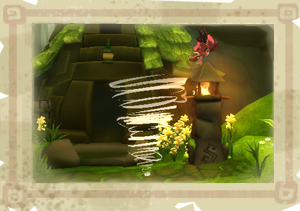

8 |
Pouvoirs du vent |
 |
|

Le pouvoir d'Enril se contrôle à l'aide de la télécommande Wii, en déplaçant le curseur Vent..
À Mistralis, tout réagit au vent. Tu peux donc faire passer le curseur Vent sur tout ce que tu vois. Tu seras peut-être surpris de ce que tu découvres.
Pouvoirs avancés du Vent :
Souffle – Maintiens le bouton A enfoncé en traçant une ligne avec Enril, puis relâche le bouton pour produire un souffle.
Sillage – Maintiens le bouton B enfoncé en traçant une courbe avec Enril, puis relâche le bouton pour produire un sillage.
Vortex – Maintiens le bouton A enfoncé et trace un cercle avec Enril. Relâche le bouton pour produire un vortex. Remarque : la création d’un vortex en hiver produit une boule de neige.
Cyclone – Pointe Enril à l’endroit où tu veux produire un cyclone. Maintiens les boutons A et B enfoncés, puis exécute un mouvement de « lasso » avec ta télécommande Wii afin de créer un cyclone.
|
 |
 |
 |